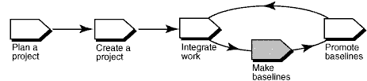

Overview
The following diagram illustrates the workflow for managing UCM projects. Shaded areas are discussed in this tool
mentor.

In Rational ClearCase UCM, a baseline is an object that typically represents a stable configuration of a component. A
baseline identifies activities and one version of every element in a component, in effect, acting as a version of a
component.
As developers deliver work to the integration stream, project managers make new baselines for the project's
integration, or shared, working area that incorporate the changes. Developers can then rebase to the new baselines and
stay current with changes in the project.
This tool mentor is applicable when running Microsoft Windows.
Terminology
Types of Baselines
An incremental baseline is a baseline that ClearCase creates by recording the last full baseline and
those versions that have changed since the last full baseline was created.
A full baseline is a baseline that ClearCase creates by recording all versions below the component's
root directory. Generally, it takes less time to create an incremental baseline. However, it takes less time for
ClearCase to look up the contents of a full baseline.
Follow these steps to create baselines:
No new work can be delivered to the integration stream while it is locked, ensuring a stable configuration from which
to create the baseline.
-
From the Windows task bar, select Start > Programs > Rational Software > Rational ClearCase >
Project Explorer.
-
From the Project Explorer, locate and select your project's integration stream.
-
Click File > Properties to display the integration stream's property sheet.
-
Click the Lock tab.
-
Click Locked and then click OK.
-
From the Project Explorer, locate and select your project's integration stream.
-
Click Tools > Make Baseline. The Make Baseline dialog box appears.
This descriptive information includes the baseline's name, the type of baseline to create, the components for which to
create a baseline, and the view and stream information to use.
-
Enter a name in the Baseline Name box. By default, ClearCase names the baseline by appending the date to the
project name.
-
Select incremental or full as the type of baseline to create.
-
Select a view context for the baseline by specifying one of the project's integration views, a view attached to the
project's integration stream.
-
Specify the components for which you are creating baselines. ClearCase automatically appends a unique identifier to
each baseline to help differentiate baselines associated with individual components.
 For more information,
see the topic titled ClearCase Component Tree Browser in ClearCase online Help. For more information,
see the topic titled ClearCase Component Tree Browser in ClearCase online Help.
-
From the Project Explorer, locate and select your project's integration stream.
-
Click File > Properties to display the integration stream's property sheet.
-
Click the Lock tab.
-
Click Unlocked and then click OK.
For more information,
see these ClearCase online Help topics:
-
About baselines
-
Making a baseline
|